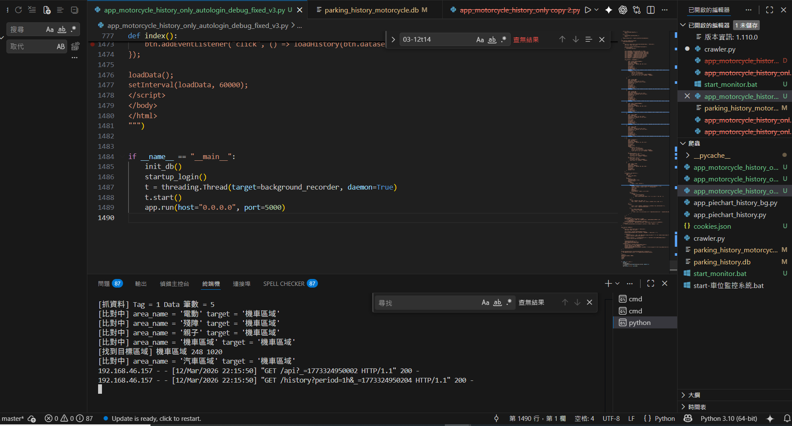
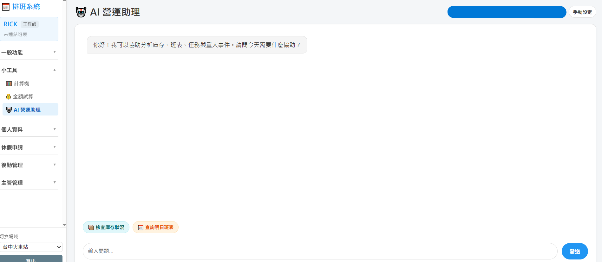
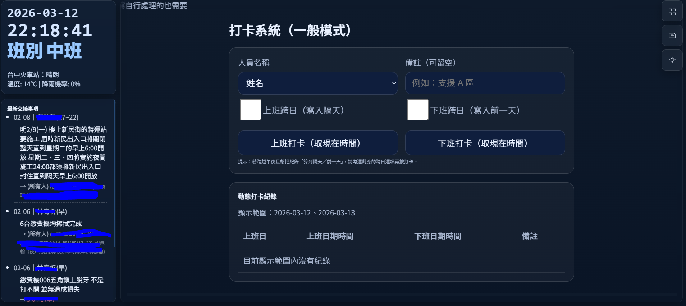
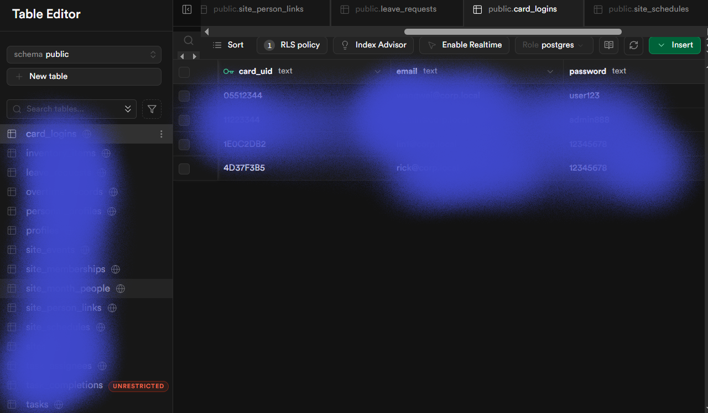

AI 協作
利用 AI 工具輔助創作、分析與工作規劃，建立更穩定的人機協作流程，提升產出速度與思考效率。
在創意、AI 與自動化之間，打造更有效率的實作方式。
聚焦場域創新、AI 協作應用、自動化流程設計與系統優化， 將想法、需求與工具整合成可執行的方案，讓概念真正能夠落地與運作。
以 AI 協作、文案發想、自動化流程與場域優化為核心，串接創意、需求與實際執行。
我不是傳統工程師，更接近創意與技術之間的橋樑，協助把抽象想法轉成可實作、可優化、可持續迭代的系統與專案。
從需求理解、概念轉譯到流程設計，我關注的是如何讓創意與 AI 工具真正服務現實場景。
我關注的是如何讓創意與技術真正落地。透過 AI 協作、流程設計與工具整合，將原本複雜或重複的工作轉化為更有效率的自動化系統。
我的角色並不是傳統工程師，更接近於創意與技術之間的橋樑。我會從需求出發，分析問題、設計流程、運用 AI 工具，建立自動化或優化方案，讓想法不只停留在概念，而能實際運作。
目前主要聚焦於場域創新、AI 協作應用、自動化流程設計，以及工作效率與系統優化，希望建立更靈活、更能持續成長的實作方式。
比起單一技能，更重視如何把不同工具與思路組合成能解決問題的工作方式。
利用 AI 工具輔助創作、分析與工作規劃，建立更穩定的人機協作流程，提升產出速度與思考效率。
從概念、需求到提案，整理內容結構並發展具方向性的文案，協助專案更清楚地表達價值與目標。
透過工具與程式建立自動化流程，減少重複性操作，讓資料整理、任務執行與日常管理更有效率。
觀察使用流程與系統結構，找出可優化的地方，設計更順暢的操作方式與更具延展性的實作方案。
這裡先保留展示結構。你上傳圖片後，可以直接替換成正式專案內容與封面。

以 AI 協作方式快速規劃、修改與驗證程式，將開發流程從純手動撰寫轉向更高效率的實作與迭代模式。

將本地 AI 模型導入網頁流程，強化互動能力、回應邏輯與管理操作，讓工具更貼近真實使用情境。

整合介面、資訊顯示與管理流程，依照場域需求打造可視化的操作頁面，提升管理效率與資訊掌握度。
你要的不是 AI，而是懂得學習、不被時間拋下的人。
這句話也會成為整個頁面的核心精神。
從資料表、後台管理到帳號與欄位結構，建立可支援日常維護與功能擴充的基礎管理系統。
如果你想交流合作、討論專案，或進一步了解我的工作方式，歡迎與我聯絡。